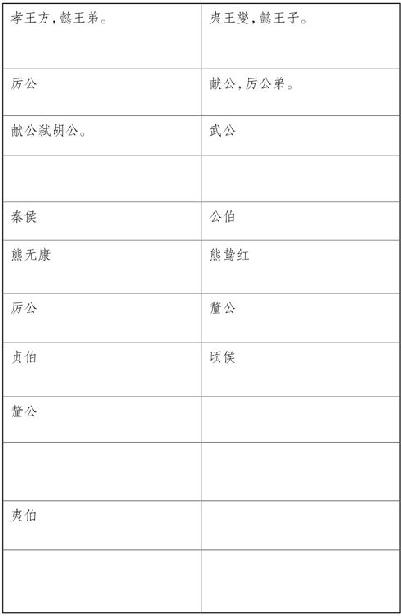

史记卷四十八
陈涉世家第十八
陈胜 者，阳城 人也，字涉 。吴广 者，阳夏 人也，字叔 。陈涉 少时，尝与人佣耕，辍耕之垄上，怅恨久之，曰：“苟富贵，无相忘。”庸者笑而应曰：“若为庸耕，何富贵也？”陈涉 太息曰：“嗟乎，燕雀安知鸿鹄之志哉！”
二世 元年七月，发闾左適戍渔阳 ，九百人屯大泽乡 。陈胜 、吴广 皆次当行，为屯长。会天大雨，道不通，度已失期。失期，法皆斩。陈胜 、吴广 乃谋曰：“今亡亦死，举大计亦死，等死，死国可乎？”陈胜 曰：“天下苦秦 久矣。吾闻二世 少子也，不当立，当立者乃公子扶苏 。扶苏 以数谏故，上使外将兵。今或闻无罪，二世 杀之。百姓多闻其贤，未知其死也。项燕 为楚 将，数有功，爱士卒，楚 人怜之。或以为死，或以为亡。今诚以吾众诈自称公子扶苏 、项燕 ，为天下唱，宜多应者。”吴广 以为然。乃行卜。卜者知其指意，曰：“足下事皆成，有功。然足下卜之鬼乎！”陈胜 、吴广 喜，念鬼，曰：“此教我先威众耳。”乃丹书帛曰“陈胜 王”，置人所罾鱼腹中。卒买鱼烹食，得鱼腹中书，固以怪之矣。又间令吴广 之次所旁丛祠中，夜篝火，狐鸣呼曰“大楚 兴，陈胜 王”。卒皆夜惊恐。旦日，卒中往往语，皆指目陈胜 。
吴广 素爱人，士卒多为用者。将尉醉，广 故数言欲亡，忿恚尉，令辱之，以激怒其众。尉果笞广 。尉剑挺，广 起，夺而杀尉。陈胜 佐之，并杀两尉。召令徒属曰：“公等遇雨，皆已失期，失期当斩。藉弟令毋斩，而戍死者固十六七。且壮士不死即已，死即举大名耳，王侯将相宁有种乎！”徒属皆曰：“敬受命。”乃诈称公子扶苏 、项燕 ，从民欲也。袒右，称大楚 。为坛而盟，祭以尉首。陈胜 自立为将军，吴广 为都尉。攻大泽乡 ，收而攻蕲 。蕲 下，乃令符离 人葛婴 将兵徇蕲 以东。攻铚 、 、苦 、柘 、谯 皆下之。行收兵。比至陈 ，车六七百乘，骑千馀，卒数万人。攻陈 ，陈 守令皆不在，独守丞与战谯门中。弗胜，守丞死，乃入据陈 。数日，号令召三老、豪杰与皆来会计事。三老、豪杰皆曰：“将军身被坚执锐，伐无道，诛暴秦 ，复立楚国 之社稷，功宜为王。”陈涉 乃立为王，号为张楚 。
当此时，诸郡县苦秦 吏者，皆刑其长吏，杀之以应陈涉 。乃以吴叔 为假王，监诸将以西击荥阳 。令陈 人武臣 、张耳 、陈馀 徇赵 地，令汝阴 人邓宗 徇九江郡 。当此时，楚 兵数千人为聚者，不可胜数。
葛婴 至东城 ，立襄彊 为楚王 。婴 后闻陈王 已立，因杀襄彊 ，还报。至陈 ，陈王 诛杀葛婴 。陈王 令魏 人周市 北徇魏 地。吴广 围荥阳 。李由 为三川 守，守荥阳 ，吴叔 弗能下。陈王 征国之豪杰与计，以上蔡 人房君蔡赐 为上柱国。
周文
，陈
之贤人也，尝为项燕
军视日，事春申君
，自言习兵，陈王
与之将军印，西击秦
。行收兵至关，车千乘，卒数十万，至戏
，军焉。秦
令少府章邯
免郦山
徒、人奴产子生，悉发以击楚
大军，尽败之。周文
败，走出关，止次曹阳
二三月。章邯
追败之，复走次渑池
十馀日。章邯
击，大破之。周文
自刭，军遂不战。
武臣 到邯郸 ，自立为赵王 ，陈馀 为大将军，张耳 、召骚 为左右丞相。陈王 怒，捕系武臣 等家室，欲诛之。柱国曰：“秦 未亡而诛赵王 将相家属，此生一秦 也。不如因而立之。”陈王 乃遣使者贺赵 ，而徙系武臣 等家属宫中，而封耳 子张敖 为成都君 ，趣赵 兵亟入关。赵王 将相相与谋曰：“王王赵 ，非楚 意也。楚 已诛秦 ，必加兵于赵 。计莫如毋西兵，使使北徇燕 地以自广也。赵 南据大河 ，北有燕 、代 ，楚 虽胜秦 ，不敢制赵 。若楚 不胜秦 ，必重赵 。赵 乘秦 之弊，可以得志于天下。”赵王 以为然，因不西兵，而遣故上谷 卒史韩广 将兵北徇燕 地。
燕 故贵人豪杰谓韩广 曰：“楚 已立王，赵 又已立王。燕 虽小，亦万乘之国也，愿将军立为燕王 。”韩广 曰：“广 母在赵 ，不可。”燕 人曰：“赵 方西忧秦 ，南忧楚 ，其力不能禁我。且以楚 之强，不敢害赵王 将相之家，赵 独安敢害将军之家！”韩广 以为然，乃自立为燕王 。居数月，赵 奉燕王 母及家属归之燕 。
当此之时，诸将之徇地者，不可胜数。周市 北徇地至狄 ，狄 人田儋 杀狄 令，自立为齐王 ，以齐 反，击周市 。市 军散，还至魏 地，欲立魏 后故甯陵君咎 为魏王 。时咎 在陈王 所，不得之魏 。魏 地已定，欲相与立周市 为魏王 ，周市 不肯。使者五反，陈王 乃立甯陵君咎 为魏王 ，遣之国。周市 卒为相。
将军田臧 等相与谋曰：“周章 军已破矣，秦 兵旦暮至，我围荥阳城 弗能 下，秦 军至，必大败。不如少遗兵，足以守荥阳 ，悉精兵迎秦 军。今假王骄，不知兵权，不可与计，非诛之，事恐败。”因相与矫王令以诛吴叔 ，献其首于陈王 。陈王 使使赐田臧楚 令尹印，使为上将。田臧 乃使诸将李归 等守荥阳城 ，自以精兵西迎秦 军于敖仓 。与战，田臧 死，军破。章邯 进兵击李归 等荥阳 下，破之，李归 等死。
阳城 人邓说 将兵居郏 ，章邯 别将击破之，邓说 军散走陈 。铚 人伍徐 将兵居许 ，章邯 击破之，伍徐 军皆散走陈 。陈王 诛邓说 。
陈王 初立时，陵 人秦嘉 、铚 人董绁 、符离 人朱鸡石 、取虑 人郑布 、徐 人丁疾 等皆特起，将兵围东海 守庆 于郯 。陈王 闻，乃使武平君畔 为将军，监郯 下军。秦嘉 不受命，嘉 自立为大司马，恶属武平君 。告军吏曰：“武平君 年少，不知兵事，勿听！”因矫以王命杀武平君畔 。
章邯
已破伍徐
，击陈
，柱国房君
死。章邯
又进兵击陈
西张贺
军。陈王
出监战，军破，张贺
死。
腊月，陈王 之汝阴 ，还至下城父 ，其御庄贾 杀以降秦 。陈胜 葬砀 ，谥曰隐王 。
陈王 故涓人将军吕臣 为仓头军，起新阳 ，攻陈 下之，杀庄贾 ，复以陈 为楚 。
初，陈王
至陈
，令铚
人宋留
将兵定南阳
，入武关
。留
已徇南阳
，闻陈王
死，南阳
复为秦
。宋留
不能入武关
，乃东至新蔡
，遇秦
军，宋留
以军降秦
。秦
传留
至咸阳
，车裂留
以徇。
秦嘉 等闻陈王 军破出走，乃立景驹 为楚王 ，引兵之方与 ，欲击秦 军定陶 下。使公孙庆 使齐王 ，欲与并力俱进。齐王 曰：“闻陈王 战败，不知其死生，楚 安得不请而立王！”公孙庆 曰：“齐 不请楚 而立王，楚 何故请齐 而立王！且楚 首事，当令于天下。”田儋 诛杀公孙庆 。
秦
左右校复攻陈
，下之。吕将军
走，收兵复聚。鄱
盗当阳君黥布
之兵相收，复击秦
左右校，破之青波
，复以陈
为楚
。会项梁
立怀王
孙心
为楚王
。
陈胜 王凡六月。已为王，王陈 。其故人尝与庸耕者闻之，之陈 ，扣宫门曰：“吾欲见涉 。”宫门令欲缚之。自辩数，乃置，不肯为通。陈王 出，遮道而呼涉 。陈王 闻之，乃召见，载与俱归。入宫，见殿屋帷帐，客曰：“夥颐！涉 之为王沈沈者！”楚 人谓多为夥，故天下传之，夥涉 为王，由陈涉 始。 客出入愈益发舒，言陈王 故情。或说陈王 曰：“客愚无知，颛妄言，轻威。”陈王 斩之。诸陈王 故人皆自引去，由是无亲陈王 者。陈王 以朱房 为中正，胡武 为司过，主司群臣。诸将徇地，至，令之不是者，系而罪之，以苛察为忠。其所不善者，弗下吏，辄自治之。陈王 信用之。诸将以其故不亲附。此其所以败也。
陈胜
虽已死，其所置遣侯王将相竟亡秦
，由涉
首事也。高祖
时为陈涉
置守冢三十家砀
，至今血食。
褚先生 曰：地形险阻，所以为固也；兵革刑法，所以为治也。犹未足恃也。夫先王以仁义为本，而以固塞文法为枝叶，岂不然哉！吾闻贾生 之称曰：
“秦孝公 据殽函 之固，拥雍州 之地，君臣固守，以窥周室 。有席卷天下，包举宇内，囊括四海之意，并吞八荒之心。当是时也，商君 佐之，内立法度，务耕织，修守战之备；外连衡而斗诸侯。于是秦 人拱手而取西河 之外。
“孝公 既没，惠文王 、武王 、昭王 蒙故业，因遗策，南取汉中 ，西举巴蜀 ，东割膏腴之地，收要害之郡。诸侯恐惧，会盟而谋弱秦 。不爱珍器重宝肥饶之地，以致天下之士。合从缔交，相与为一。当此之时，齐 有孟尝 ，赵 有平原 ，楚 有春申 ，魏 有信陵 ：此四君者，皆明知而忠信，宽厚而爱人，尊贤而重士。约从连衡，兼韩 、魏 、燕 、赵 、宋 、卫 、中山 之众。于是六国之士有甯越 、徐尚 、苏秦 、杜赫 之属为之谋，齐明 、周冣 、陈轸 、邵滑 、楼缓 、翟景 、苏厉 、乐毅 之徒通其意，吴起 、孙膑 、带他 、兒良 、王廖 、田忌 、廉颇 、赵奢 之伦制其兵。尝以什倍之地，百万之师，仰关而攻秦 。秦 人开关而延敌，九国之师遁逃而不敢进。秦 无亡矢遗镞之费，而天下固已困矣。于是从散约败，争割地而赂秦 。秦 有馀力而制其弊，追亡逐北，伏尸百万，流血漂橹，因利乘便，宰割天下，分裂山河，强国请服，弱国入朝。
“施及孝文王 、庄襄王 ，享国之日浅，国家无事。
“及至始皇 ，奋六世之馀烈，振长策而御宇内，吞二周 而亡诸侯，履至尊而制六合，执敲朴以鞭笞天下，威振四海。南取百越 之地，以为桂林 、象郡 ，百越 之君俛首系颈，委命下吏。乃使蒙恬 北筑长城而守藩篱，却匈奴 七百馀里，胡 人不敢南下而牧马，士亦不敢贯弓而报怨。于是废先王之道，燔百家之言，以愚黔首。堕名城，杀豪俊，收天 下之兵聚之咸阳 ，销锋 ，铸以为金人十二，以弱天下之民。然后践华 为城，因河 为池，据亿丈之城，临不测之谿以为固。良将劲弩，守要害之处，信臣精卒，陈利兵而谁何。天下已定，始皇 之心，自以为关中 之固，金城千里，子孙帝王万世之业也。
“始皇 既没，馀威振于殊俗。然而陈涉 瓮牖绳枢之子，甿隶之人，而迁徙之徒也。材能不及中人，非有仲尼 、墨翟 之贤，陶朱 、猗顿 之富也。蹑足行伍之间，俛仰仟佰之中，率罢散之卒，将数百之众，转而攻秦 。斩木为兵，揭竿为旗，天下云会响应，赢粮而景从，山东 豪俊遂并起而亡秦 族矣。
“且天下非小弱也；雍州
之地，殽函
之固自若也。陈涉
之位，非尊于齐
、楚
、燕
、赵
、韩
、魏
、宋
、卫
、中山
之君也； 耰棘矜，非铦于勾戟长锻也；適戍之众，非俦于九国之师也；深谋远虑，行军用兵之道，非及乡时之士也。然而成败异变，功业相反也。尝试使山东
之国与陈涉
度长絜大，比权量力，则不可同年而语矣。然而秦
以区区之地，致万乘之权，抑八州而朝同列，百有馀年矣。然后以六合为家，殽函
为宫。一夫作难而七庙堕，身死人手，为天下笑者，何也？仁义不施，而攻守之势异也。”
耰棘矜，非铦于勾戟长锻也；適戍之众，非俦于九国之师也；深谋远虑，行军用兵之道，非及乡时之士也。然而成败异变，功业相反也。尝试使山东
之国与陈涉
度长絜大，比权量力，则不可同年而语矣。然而秦
以区区之地，致万乘之权，抑八州而朝同列，百有馀年矣。然后以六合为家，殽函
为宫。一夫作难而七庙堕，身死人手，为天下笑者，何也？仁义不施，而攻守之势异也。”